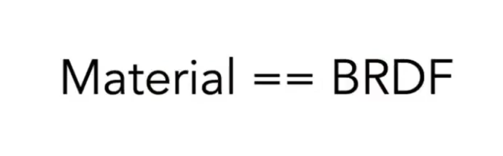

L17 Materials and Appearances
材质和外观

0 前言
我们研究材质，其实是研究材质如何与光线作用，也就是研究BRDF。这个思想将是这节的核心。
1 漫反射材质 Diffuse / Lambertian Material
对于漫反射材质，无论哪个方向的光进来，都会被均匀地反射到四面八方去。
漫反射BRDF：\(f_r = \rho / \pi\)，其中 \(\rho\) 是反射率（albedo），在0到1之间。
2 光泽材质 Glossy Material
反射情况介于镜面反射和漫反射之间的材质，我们称为Glossy material。
3 理想反射/折射材质
反射和折射都有的材料，类似玻璃与水，我们称之为 Ideal reflective / refractive material。
3.1 完美镜面反射

3.2 镜面折射
折射定律 Snell's Law：入射角正弦值×入射材质折射率 = 折射角正弦×出射材质折射率。
3.3 BSDF
BSDF（散射） = BRDF（反射） + BTDF（折射）
3.4 菲涅尔项 Fresnel Term
有多少光被反射，是和入射光与法线的角度有关系的。用菲涅尔项我们就可以判定有多少能量被反射，有多少能量被折射。


4 微表面模型 Microfacet Material
微表面模型假设物体表面是粗糙的，从远处看是一个粗糙的平面，从近处看可以看到凹凸不平的表面，并且每一个表面的微元都是完完全全镜面反射的物体。


微表面模型的BRDF：
- F：菲涅尔项，考虑入射和半程向量
- D：法线分布，考虑查询半程向量是否在法线分布上
- G：几何项，考虑可能发生互相遮挡

5 各向同性/各向异性材质
所谓各向同性，我们认为它的微表面并不存在一定的方向性。对于各向异性，我们认为它的微表面存在方向性。


6 BRDF总结
- 非负性：描述能量分布
- 线性：可加、组合
- 可逆性：交换入射和出射，结果一致
- 能量守恒：能量要么前后一致，要么变小（被吸收）
7 测量BRDF
实际测量出来的BRDF和推算出来的BRDF经常会有很大差距。如果可以测量的话，也就不用推导模型，直接用数据了。